SoRent Rentis Last updated: 2019-06-01
Rezerwacje assistance, oc sprawcy, prywatne, długoterminowe, www oraz brokerskie.
Dodawanie najmow wstecz, zarzadzanie odmowami.
Lista brokerow, ściaga VIG i FAQ.
Dodawanie rezerwacji assistance
Podczas dodawania rezerwacji assistance w pozycji Klient oraz Zamawiający wybieramy usługodawce. W pozycji Użytkownik wpisujemy klienta ze zlecenia, a następnie wybieramy odpowiedni kontrakt. Upewniamy się, aby typ rezerwacji był ustawiony na Partnerska
Przykład:
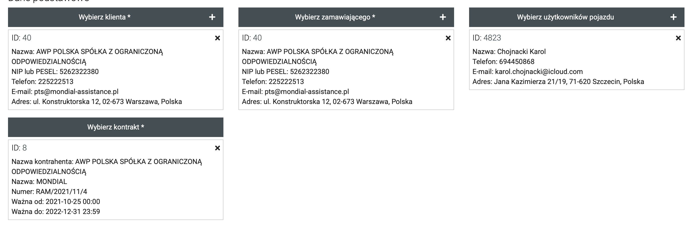{kind=link}
UWAGA!
W przypadku VIG/Global Assistance:
Zamawiającym jest zawsze: Global Assistance
Klient: w zleceniu na dole wytłuszczony na czarno lub po końcowce sprawy (ściąga)
Użytkownik: osoba na zleceniu
Dane dotyczące szkody:
W tym miejscu uzupełniamy daty gwarancji assistance.
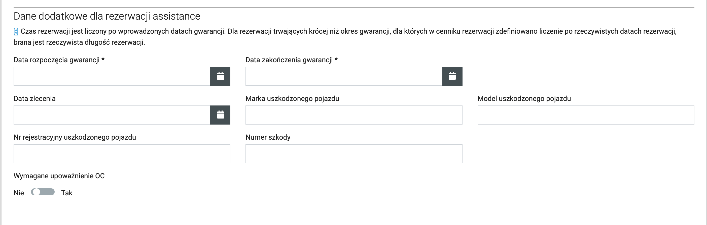{kind=link}
Podstawienie i szczegoły:
Jeśli chcemy, aby podstawienie odbyło się poza biurem zaznaczamy opcje podstawienie.
W celu przekazania informacji pracownikowi wpisujemy je w rubryce uwagi do wydania
Liczenie kilometrow za podstawienie możemy liczyć od oddziału wydania - pierwsza ikonka drogi lub od najbliższego oddziału - druga ikonka trasy między dwoma punktami
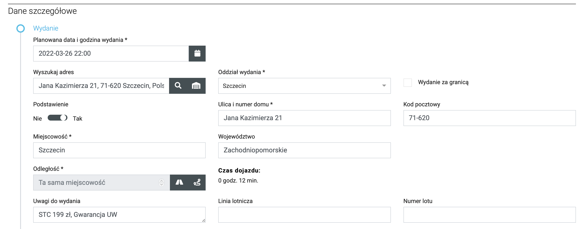
{kind=link}
Usługi dodatkowe:
Jeśli chcemy dodać z gory dodatkowe usługi możemy wybrać je w tym miejscu. Po dodaniu należy upewnić się czy jest dobrze ustawiony płatnik oraz nabywca.
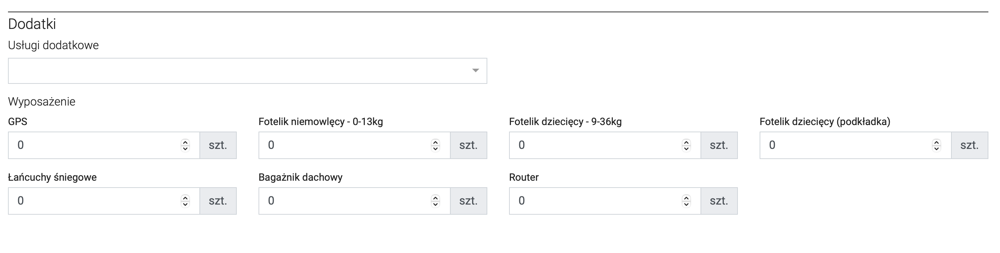{kind=link}
Kaucja:
W przypadku, gdy potrzebujemy pobrać kaucję, podczas tworzenia w Podsumowanie zaznaczamy ustawianie ręczne oraz wprowadzamy kwotę, walutę i metodę płatności.
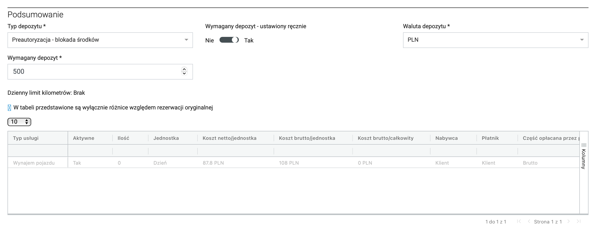{kind=link}
Nie widzisz auta?
Jeśli podczas wpisywania rezerwacji auto, ktore chcemy jest niewidoczne możemy sprawdzić co się z nim dzieje po naciśnieciu Sprawdź powod niedostępności 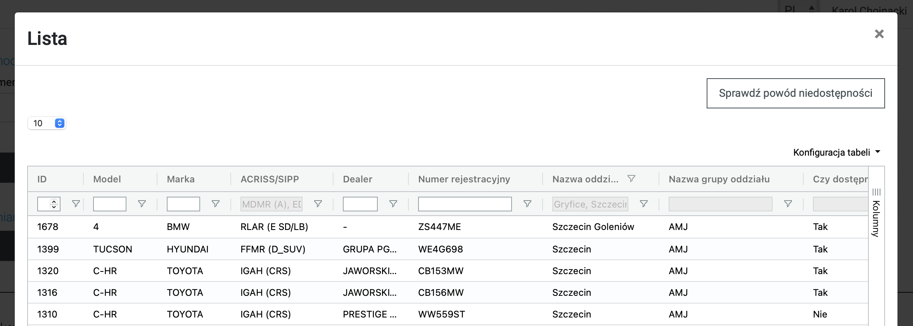
{kind=link}
Dodawanie rezerwacji OC sprawcy
Podczas dodawania rezerwacji OC sprawcy w pozycji Klient wpisujemy właściciela auta uszkodzonego (firma lub osoba), Zamawiający wybieramy usługodawce. W pozycji Użytkownik wpisujemy klienta ze zlecenia, a następnie wybieramy odpowiedni kontrakt. Upewniamy się, aby typ rezerwacji był ustawiony na Partnerska
Przykład:
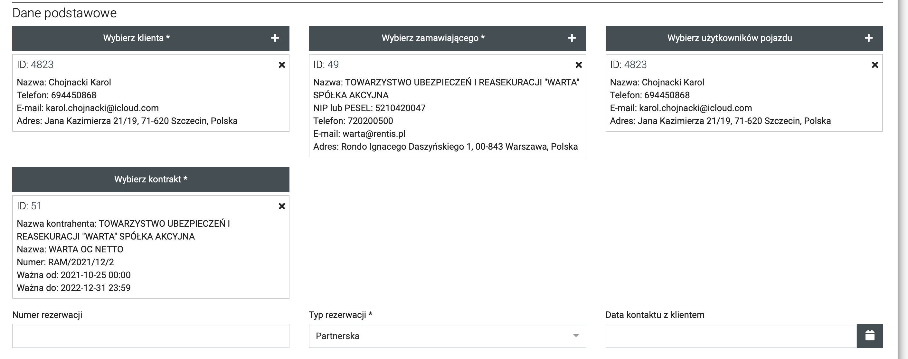{kind=link}
UWAGA!
W przypadku VIG/Global Assitance:
Zamawiającym jest zawsze: Global Assistance
Klientem jest zawsze firma, jeśli auto jest na osobę prywatną, wpisujemy dane wytłuszczone na czarno na dole zlecenia (ściąga)
Użytkownik: osoba na zleceniu
Dane dotyczące szkody:
W tym miejscu uzupełniamy daty gwarancji assistance oraz potrzebne dane dotyczące szkody i uszkodzonego auta klienta. W przypadku, gdy obiera inna osoba niż właściciel auta zaznaczamy wymagane upoważnienie OC (z wyłączeniem PZU i Link4)
Podstawienie i szczegoły:
Jeśli chcemy, aby podstawienie odbyło się poza biurem zaznaczamy opcje podstawienie.
W celu przekazania informacji pracownikowi wpisujemy je w rubryce uwagi do wydania
Liczenie kilometrow za podstawienie możemy liczyć od oddziału wydania - pierwsza ikonka drogi lub od najbliższego oddziału - druga ikonka trasy między dwoma punktami
Usługi dodatkowe:
Jeśli chcemy dodać z gory dodatkowe usługi możemy wybrać je w tym miejscu. Po dodaniu należy upewnić się czy jest dobrze ustawiony płatnik oraz nabywca.
Dodawanie rezerwacji prywatnej
W przypadku rezerwacji prywatnej w pozycji klient wpisujemy dane firmy lub osoby, na ktora ma zostać wystawiona FV. Typ rezerwacji ustawiamy na: Indywidualny
Przykład:
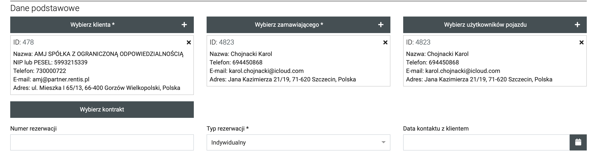{kind=link}
Klient płaci po najmie?
Jeśli klient płaci z dołu to po utworzeniu rezerwacji zmieniamy sposob płatności w pozycjach fakturowych - link
Oferujesz klientowi inną cenę niż z cennika?
Gdy użytkownik ma dodany e-mail, dostanie mailowe potwierdzenie złożenia rezerwacji wraz z segmentem oraz kwotami z cennika. Jeśli chcesz to ominąć utworz najpierw rezerwacje z typem WWW, po utworzeniu i spersonalizowaniu stawek zmień typ na Indywidualna - klient nie otrzyma wtedy maila.
Podstawienie i szczegoły:
Jeśli chcemy, aby podstawienie odbyło się poza biurem zaznaczamy opcje podstawienie.
W celu przekazania informacji pracownikowi wpisujemy je w rubryce uwagi do wydania
Liczenie kilometrow za podstawienie możemy liczyć od oddziału wydania - pierwsza ikonka drogi lub od najbliższego oddziału - druga ikonka trasy między dwoma punktami
Usługi dodatkowe:
Jeśli chcemy dodać z gory dodatkowe usługi możemy wybrać je w tym miejscu. Po dodaniu należy upewnić się czy jest dobrze ustawiony płatnik oraz nabywca.
Kaucja:
W celu ustawienia niestandardowej kaucji podczas tworzenia w Podsumowanie zaznaczamy ustawianie ręczne oraz wprowadzamy kwotę, walutę i metodę płatności.
Dodawanie rezerwacji długoterminowej
Zakładanie rezerwacji długoterminowej składa się z kilku dodatkowych etapow: utworzenie cennikow oraz przypisanie lub utworzenie nowego kontraktu.
Tworzenie nowego cennika:
W celu stworzenia nowego cennika udajemy się do modułu Cenniki. Musimy utworzyć nowy cennik Wynajem oraz Kary.
Wynajem - tutaj określamy stawki miesiecznie za dany segment, limit km, wysokość depozytu oraz metodę płatności.
Kary - w tym miejscu głownie interesuje nas kwota za każdy kilometr nadbiegu.
Kontrakt - tworzymy w module kontrakty, pozwala skonfigurować między innymi ilość dni na zapłatę faktury, automatyczne fakturowanie.
Wynajem:
Aby utworzyć nowy cennik, wchodzimy w listę już istniejących i wybieramy jeden z długoterminowych cennikow np. WGS Agentur po czym klikamy Dodaj podobny. Tworzymy nazwę nowego cennika i zmieniamy priorytet, gdyż każdy cennik musi mieć unikalny. A także przypisujemy kontrakt. Poniżej w tabeli ustawiamy stawki dla segmentu, ktory nas interesuje.
{kind=link}
Kary:
Analogicznie postępujemy w przypadku cenniku kar.
Kontrakt:
Po utworzeniu cennikow przechodzimy do kontraktu, jeśli korzystamy z wyżej wymienionego cennika wchodzimy w szczegoly i dodajemy kontrahenta, ktorego będzie obejmować ten kontrakt.
Gdy potrzebujemy utworzyć nowy kontrakt, dodajemy podobny na bazie istniejącego już kontraktu.
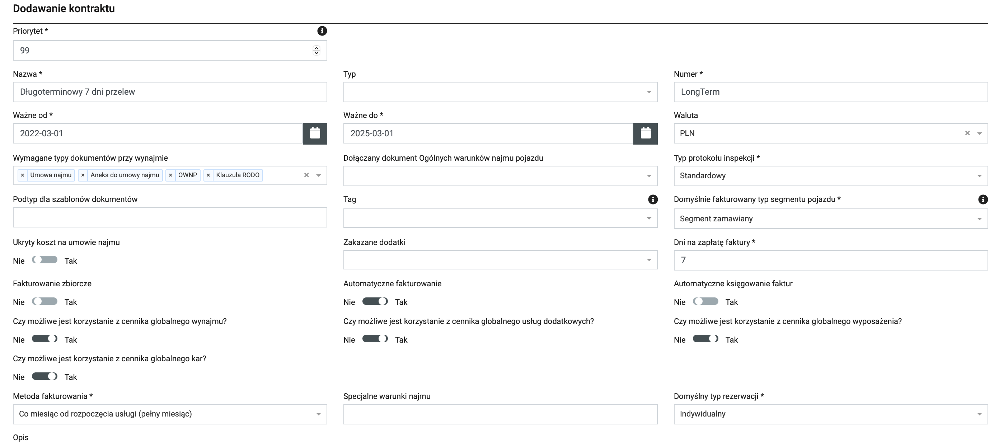{kind=link}
Usługi dodatkowe:
W tym miejscu najbardziej interesuje nas pakiet STC rozliczany miesięcznie. W tym celu podczas tworzenia rezerwacji w pozycji cennik usług dodatkowychg wybieramy LongTerm STC 150. Jest to pakiet STC w kwocie 150 zł netto miesięcznie.
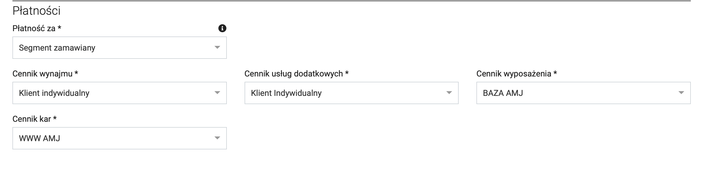{kind=link}
Zakładanie rezerwacji:
Po utworzeniu wszelkich cennikow oraz kontraktow przechodzimy do założenia rezerwacji. Przebieg wygląda podobnie jak w przypadku rezerwacji prywatnej. Ważnym elementem jest wybranie kontraktu, do ktorego jest podpięty kontrahent z cennikiem.
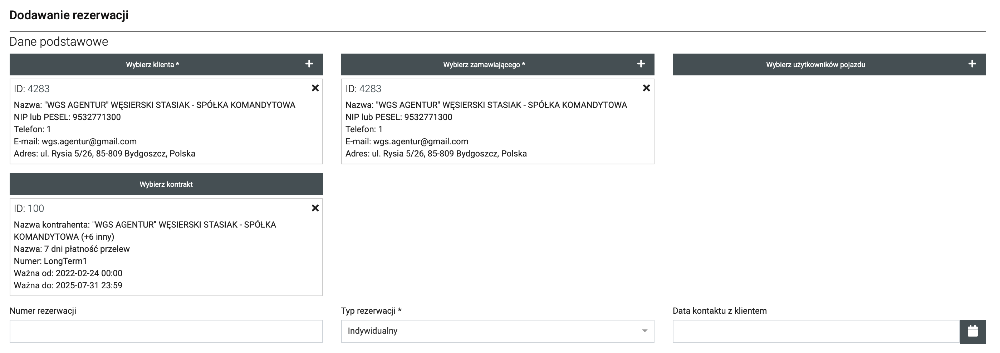{kind=link}
Brak kontraktu?
Jeśli nie widzisz kontraktu, to znaczy, że kontrahent nie został dodany do niego przypisany w kroku powyżej.
Następnie po skonfigurowaniu rezerwacji, w pozycji płatności wybieramy przez nas utworzone cenniki.
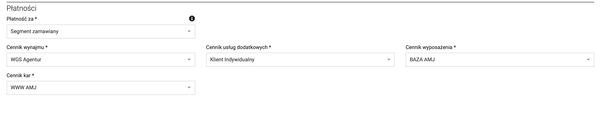{kind=link}
Dodawanie rezerwacji WWW - Rentis.pl
W przypadku rezerwacji WWW ze strony Rentis.pl wpisujemy dane z rezerwacji, FV zostanie wystawiona na dane z poyzycji klient. Typ rezerwacji ustawiamy na: WWW
Przykład:
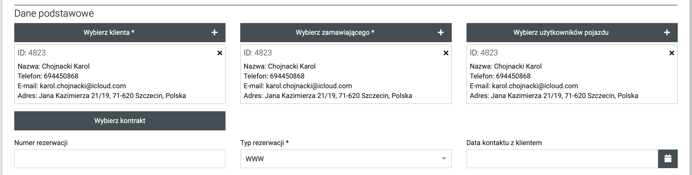{kind=link}
Podstawienie i szczegoły:
Jeśli chcemy, aby podstawienie odbyło się poza biurem zaznaczamy opcje podstawienie.
W celu przekazania informacji pracownikowi wpisujemy je w rubryce uwagi do wydania
Liczenie kilometrow za podstawienie możemy liczyć od oddziału wydania - pierwsza ikonka drogi lub od najbliższego oddziału - druga ikonka trasy między dwoma punktami
Usługi dodatkowe:
Jeśli chcemy dodać z gory dodatkowe usługi możemy wybrać je w tym miejscu. Po dodaniu należy upewnić się czy jest dobrze ustawiony płatnik oraz nabywca.
Kaucja:
W przypadku, gdy potrzebujemy pobrać kaucję, podczas tworzenia w Podsumowanie zaznaczamy ustawianie ręczne oraz wprowadzamy kwotę, walutę i metodę płatności.
Dodawanie rezerwacji brokerskich
W przypadku rezerwacji brokerskiej zamawiającym jest Broker (lista). Klientem oraz zamawiającym jest osoba z rezerwacji (z wyjątkiem Wisecars). Typ ustawiamy na: BROKER.
Przykład:
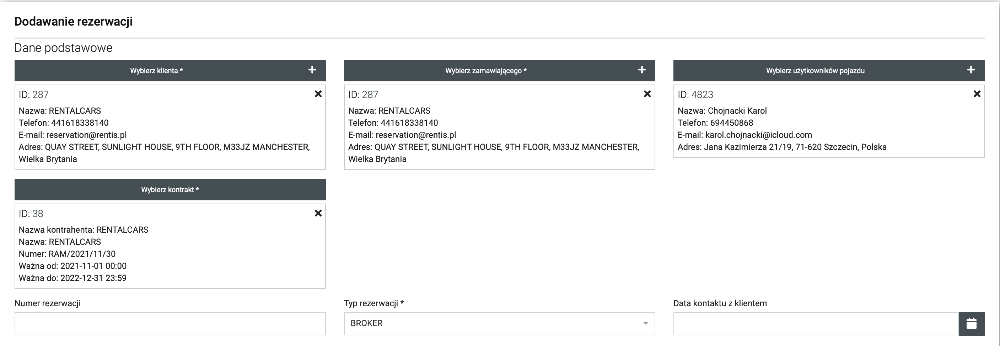{kind=link}
Podstawienie i szczegoły:
Jeśli chcemy, aby podstawienie odbyło się poza biurem zaznaczamy opcje podstawienie.
W celu przekazania informacji pracownikowi wpisujemy je w rubryce uwagi do wydania
Liczenie kilometrow za podstawienie możemy liczyć od oddziału wydania - pierwsza ikonka drogi lub od najbliższego oddziału - druga ikonka trasy między dwoma punktami
Usługi dodatkowe:
Jeśli chcemy dodać z gory dodatkowe usługi możemy wybrać je w tym miejscu. Po dodaniu należy upewnić się czy jest dobrze ustawiony płatnik oraz nabywca.
Kaucja:
W przypadku, gdy potrzebujemy pobrać kaucję, podczas tworzenia w Podsumowanie zaznaczamy ustawianie ręczne oraz wprowadzamy kwotę, walutę i metodę płatności.
Usługi w trakcie trwania najmu
Jeśli w trakcie trwania najmu chcielibyśmy dodać lub edytować usługi dodatkowe takie jak np. WZG, wchodzimy w szczegoły rezerwacji i w zakładce pozycje fakturowe dodajemy daną usługę zgodnie z potrzebami. W tym miejscu możemy rownież ustawić metodę płatności za najem lub jakąkolwiek usługę.
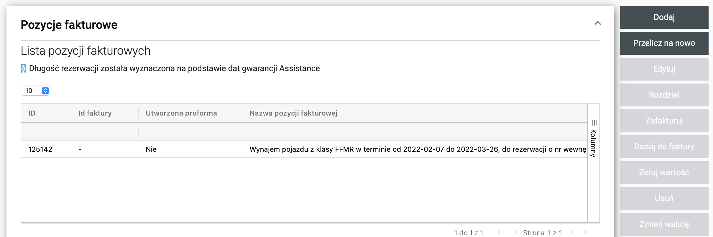{kind=link}
Wpłaty
Wpłatami zarządzamy w szczegołach rezerwacji. W tej zakładcę możemy dodać lub edytować wpłaty w trakcie najmu.
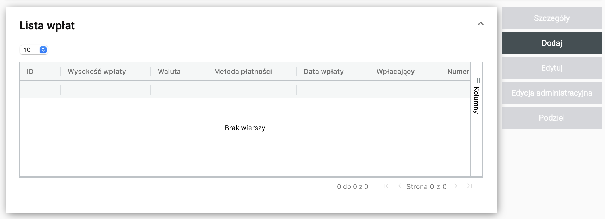{kind=link}
Najmy wstecz - Lawety
W celu wprowadzenia najmu wstecz, auta wydanego np. na lawete tworzymy rezerwację zgodnie ze zleceniem. Wprowadzamy najpier dane klienta module w Kontrahent, inaczej nie będziemy mogli rozpocząć rezerwacji przez laptop/komputer. Następnie wchodzimy w szczegoły rezerwacji i klikamy wydaj pojazd. Wybieramy klienta, generujemy protokoły SoRenta i po pobraniu. W pozycji umowa najmu i protokol, załączamy papierowe skany, natomiast pozostałe dokumenty dodajemy te, ktore zostały pobrane.
Przeniesienie rezerwacji
Czasami zachodzi potrzeba przeniesienia rezerwacji. W tym celu wchodzimy w szczegoły rezerwacji i naciskamy przenieś rezerwację. W tym momencie możemy skonfigurować nowo powstałą rezerwację według potrzeb.
Rozliczenie najmu - segment
Jeśli pierwsze zlecenie było np. na B, a wydaliśmy klientowi C klasę i nowa rezerwacja ma być rozliczana w tym segmencie, to w pozycji płatności zmieniamy płatność za z segment zamawiany na segment wydawany. Wiąże się to z tym, że przy przeniesieniu nie możemy zmienić segmentu zlecenia.{kind=link}
Wynajmy wewnętrzne
W module wynajmy wewnętrzne możemy wydać auto osobie nie generując faktury za najem. Przydatna opcja np. w przypadku pojazdow służbowych. Wynajem dodanie się tak samo jak każdą inną rezerwację.
Odmowy
W module odmowy możemy kontrolować anulowane lub odmowione zlecenia. Odmowa generuje się w przypadku anulowania utworzonej rezerwacji lub podczas tworzenia rezerwacji, gdy będziemy chcieli wyjść za pomocą powrot, wtedy zostanie wyświetlone zapytanie czy chcemy zarejestrować odmowę.
Lista brokerow
Poniżej lista brokerow, sposobu płatności oraz na kogo wystawiamy FV:
| ID | Nazwa | Płatność | FV |
|---|---|---|---|
| 106 | CarTrawler | Prepaid / Płatność na miejscu | Klient |
| 109 | Rentalcars | Prepaid | Klient |
| 11 | Booking Group | Płatność na miejscu | Klient |
| 13 | Discover Carhire | Płatność na miejscu | Klient |
| 15 | Economy Car Rentals | Płatność na miejscu | Klient |
| 16 | Enjoy Car Hire | Płatność na miejscu | Klient |
| 19 | VIP Cars | Płatność na miejscu | Klient |
| 22 | Wisecars | Prepaid | RENTIS |
| 8263 | Wisecars Limited | Płatność na miejscu | Klient |
| 624 | Vehicle Rent | Płatność na miejscu | Klient |
| --- | CarDelMer | Prepaid | Klient |
Ściąga VIG/Global Assistance
| Skrot | Nazwa firmy | ID Kontrahenta |
|---|---|---|
| CNL/BNL/BEE | Compensa | 45 |
| IR | InterRisk | 47 |
| WNR | Wiener | 48 |
| TUZ/TUW/TRA | Global | 46 |
FAQ
Umowiles zwrot z klientem, a auto jest zablokowane do kolejnego najmu?
Na początek czy użyto przycisku potwierdź zwrot z klientem.
Jeśli dalej nie możesz przypisać auta musisz ustawić poźniejszą datę wydania, ze względu iż według SoRent auto musi po ukończonym wynajmie wrocić do bazy.
Sprawdź rownież przebiegu pojazdu, możliwe, że wymagane jest wykonanie przeglądu technicznego!
Chcesz wysłać zapytanie o przedłużenie?
Użyj przycisku zapytaj o zwrot. Wystarczy wprowadzić maila, na ktory ma zostać wysłane zapytanie, jako drugi mail wprowadź oddziałowy by mieć ślad, że zapytanie zostało wysłane, ponieważ w SoRent nie będzie o tym żadnej informacji.
Klientowi kończy się najem, ale nie odbiera?
Użyj przycisku wyślij SMS o zwrocie. Klient dostanie SMS, w ktorym ma informacje z datą zakończenia najmu.
Potrzebujesz zostawić informację dotyczące najmu?
Użyj przycisku uwagi. W tym miejscu możesz dodać szybko notatkę lub uwagę dla innej osoby.
Trzeba zamienić auto klientowi?
W edycji rezerwacji korzystamy z przycisku zaplanuj zamianę samochodu i ustawiamy potrzebne dane.
SoRent dodał niechcianą pozycję fakturową?
W szczegołach rezerwacji w zakładce pozycje fakturowe wybieramy daną pozycję i używamy przycisku zeruj wartość.
Agent udał się wydać samochod, ale nastąpiła zmiana planow?
W tym momencie musimy anulować zadanie wydania i podstawienia auta. Niestety nowe nie wygenerują się same. Musimy dodać je ręcznie w poniższy sposob: Organizacja -> Zadania -> Dodaj. Wypełniamy pozycje, a na samym dole wiążemy zadanie z konkretnym wynajmem. 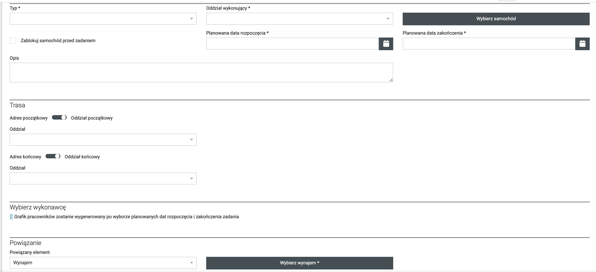
{kind=link}
Przebieg wyższy niż faktycznie?
Jeśli podczas wydawania auto w SoRent ma wyższy przebieg niż faktycznie, należy nadać kierowcy uprawnienia flotowca w module Organizacja -> użytkownicy, wtedy będzie mogl zmniejszyć przebieg. Po modyfikacji przebiegu proszę pamiętać o odebraniu uprawnień.
Zepsuty wygląd aplikacji?
Aby naprawić wygląd aplikacji wystarczy przejśc do Ustawienia -> Aplikacje -> SoRent i w tym miejscu wyczyścić dane cache i dane lokalne. Dwa przyciski na dole.